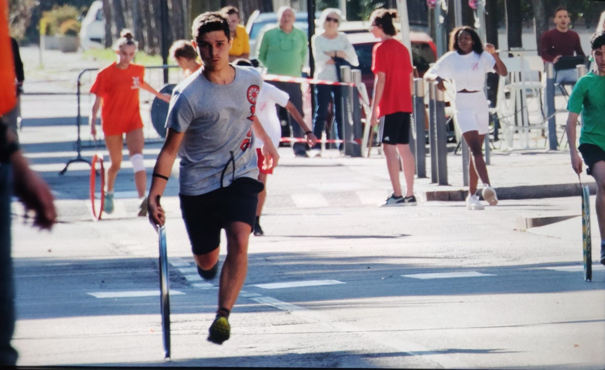

Più Informazioni su di me
La mia vita e' iniziata il 21 giugno del 2006 a Como. Ho frequentato le scuole elementari nel mio paese di provenienza ovvero Calusco d'Adda in provincia di Bergamo. Nel periodo dell'elementari non ho mai avuto problemi di nessun genere. Le medie le ho frequentate in una scuola privata all'Istituto Sacro Cuore a Villa d'Adda. Per la scuola superiore ho scelto un ITIS, seguendo anche il consiglio dei miei professori delle medie, e ho scelto di seguire l'indirizzo informatico al Paleocapa. Ora frequento la classe terza e non ho ancora avuto problemi in questa scuola. La scuola mi piace molto soprattuto da quest'anno perche' con tutti i laboratori ogni giorno non stiamo mai nello stesso ambiente o un'altra cosa che mi piace rispetto agli anni passati e' il fatto che tutte le materie si collegano tra di loro e rende sia piu' semplice le cose, perche' l'argomento viene rispiegato, ma anche piu' difficili, visto che con diverse materie l'argomento trattato viene visto da piu' prospettive e puo' tendere a confondere le persone, pero' non ho questo tipo di problema.
